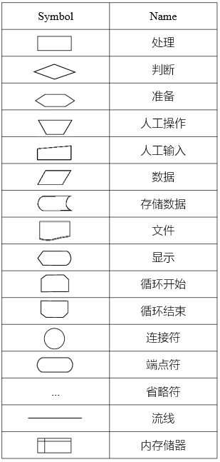
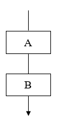
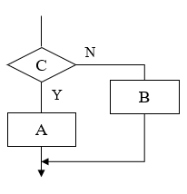
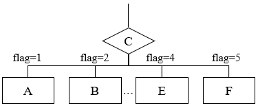
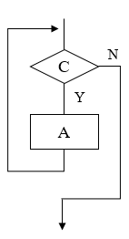
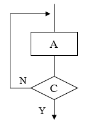

流程图讲的是“怎么做”（过程）
结构图讲的是“由什么组成”（架构）
| item | desc |
|---|---|
| 数据流程图 Data Flow Diagram |
系统中数据的流动、处理和存储情况 |
| 程序流程图 Program Flowchart |
最经典的流程图，用于详细描述具体程序或算法的执行逻辑 使用标准的图形符号（如矩形框代表处理、菱形框代表判断）来展示代码执行的先后顺序、分支判断和循环结构 是程序员编写代码前的详细设计蓝图 |
| 系统流程图 System Flowchart |
用于描绘整个物理系统的概貌 展示了系统中各个物理部件（如硬盘、打印机、人工操作、程序模块等）之间的数据流向和控制关系 侧重于表现系统的物理模型，即数据在硬件和软件之间是如何流转的 |
| 程序网络图 Program Network Chart |
用于描述程序之间的调用关系和依赖关系 不关注程序内部的具体逻辑 而是关注系统中各个程序文件（或模块）是如何相互关联、相互调用或按什么顺序执行的 类似于软件的架构视图 |
| 系统资源图 System Resource Chart |
用于描述系统运行所需的资源分配和配置情况 展示了计算机硬件资源（如CPU、内存、外设）以及软件资源是如何被分配、使用和管理，以支持系统的正常运行 |
Diagram：侧重于结构、状态和关系；面向数据流
Flowchart：侧重于过程、动作和顺序；面向过程


let age = 18; let flag = 1;

let age = 18;
if (age >= 18) {
console.log('可以投票');
} else {
console.log('不可以投票');
}

let flag = 1;
switch (flag) {
case 1:
console.log('及格');
break;
case 2:
console.log('中');
break;
case 3:
console.log('良');
break;
case 4:
console.log('优秀');
break;
default:
console.log('不及格');
}

let num = 1;
while (num <= 10) {
console.log(num);
num++;
}

let num = 1;
do {
console.log(num);
num++;
} while (num <= 10);
| WHILE-DO | DO-WHILE | |
|---|---|---|
| 判断时机 | 先判断条件，再决定是否执行 | 先执行一次，再判断是否结束 |
| 执行次数 | 可能一次都不执行（0次或多次） | 至少执行一次（1次或多次） |
| 适用场景 | 适用于不确定是否需要进入循环的情况 | 适用于必须先做一步操作才能判断的情况 |